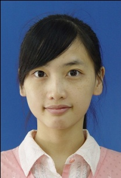

NoteThe animator is the work-horse function of SeuratJS. The elm is the Raphaël element generated and filled with the color from (x,y). step is the grid spacing used to collect the color samples. You can see more great animation examples and code on the SeuratJS Website.
CODE
paper.seurat({
imageSource: 'imgs/circus-sideshow.png',
animator: function(elm, x,y,step){
var anim = Raphael.animation({r: 7}, 350).delay(35*(x+y));
elm.animate(anim);
}});
Note paperattributes describe what your Raphaël elements look like when they are generated. In this example the radius of our circles is set to 3 and a 1 pixel stroke is set. Depending on the type of element you are using can determine which attibutes are valid to set here.
CODE
paper.seurat({ imageSource: 'imgs/circus.png',
attributes: {r: 3, stroke: 1}});
Note paperLet's round this image out:
CODE
paper.seurat({imageSource:'imgs/gray-weather.png'});
Note paperThe generator function allows for the ultimate level of flexibility in SeuratJS and provides the ability to create jaw-dropping animations. Using the generator you can alter everything from the sample coordinates (x,y) to the color. As a result you are responsible for generating a Raphaël element (use ppr which is your current Raphaël canvas) and returning it. You can see more great examples of using generators at SeuratJS Website
CODE
paper.seurat({ imageSource: 'imgs/eiffle-tower.png',
generator: function(ppr,x,y,color,step,attributes){
return ppr.circle(
Math.random()*x,
Math.random()*y,
Math.random()*7
).attr({fill: color}).attr(attributes);
},
animator: function(elm, x,y,step){
elm.animate(
Raphael.animation({r: 10,
cx: x+step/2,cy: y+step/2}, 2e3)
);
}
});
Note paperSeurat can do sharp edges too providing a great looking pixelization effect. Just set the shape object to 'rect' to override the default 'circ' option.
CODE
paper.seurat({ imageSource: 'imgs/fort-samson.png', shape: 'rect'});